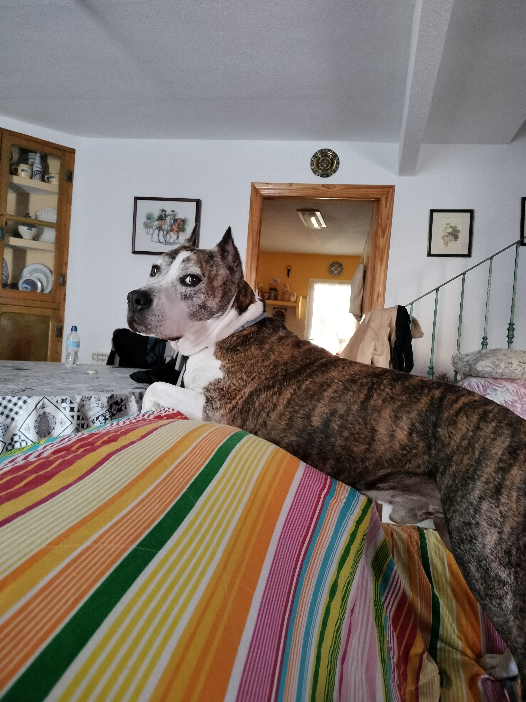
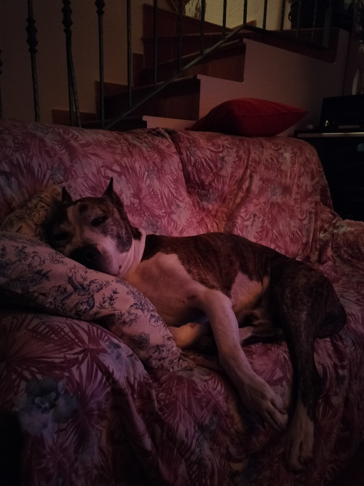

Momentos especiales
En esta galería comparto algunos momentos especiales con mis perros. Cada imagen refleja su personalidad y el vínculo tan especial que compartimos.
Galería de imágenes




Vídeo
Un pequeño vídeo de mascotas.